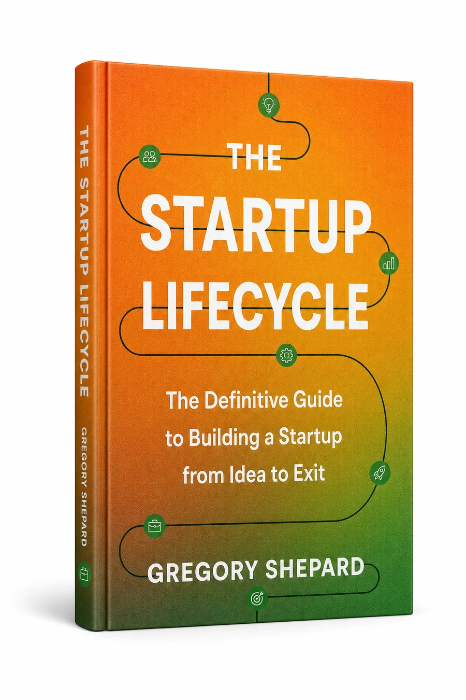

Startup Science is Gregory Shepard's seven-phase startup framework: a repeatable system for validating the idea, building investor-grade structure, engineering scale, and preparing for exit.
Startup Science turns chaos into a sequence: each phase builds the next, with the right tool at the right stage.

On-demand courses that teach the framework phase by phase.
Worksheets, diagnostics, and templates for every stage.
Investor-readiness scoring and a path to the right capital.
A network of founders building with the same operating system.
The Startup Lifecycle book, sponsored by the Fulbright Program, 26 reviews, all five stars.
Explore →One conversation. A clear read on your phase, your gaps, and whether I'm the right operator to help.